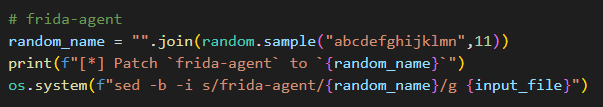

加固防护总结
hluda已经过不了某些加固了，总结一下加固中遇到的反调试、模拟器检测、xposed 家族检测和 frida 检测，最后给出绕过frida检测的方法
反调试总结
- 打开 /proc/self/status ，拿到
TracerPid的值，不是0就检测出被调试 - 从 libart.so 找到
_ZN3art3Dbg8GoActiveEv和_ZN3art3Dbg12DdmConnectedEv，如果是 libdvm.so ，则找到dvmDbgActive，hook 它们在入口处调用exit的 syscall - 读取 /proc/self/wchan ，返回的字符串不是
sys_epoll_wait就检测出被调试 - jni 调用 android/os/Debug 的
isDebuggerConnected
虚拟机检测
调用 access 检查
/dev/qemu_pipe和/dev/socket/qemud文件是否存在，注意这个 access 是系统调用读取
/proc/tty/drivers，检查是否有名为goldfish的 tty 设备使用 system_property_get 获取
persist.nox.device和persist.nox.baseband的值，这个是检查夜神模拟器读取
init.svc.qemud读取 /proc/self/maps 匹配特征，检测 va ，匹配
io.va.exposed和io.virtualapp.sandvxposed
magisk检测
调用 access 检查
/sbin/.magisk、/system/bin/magisk和/data/data/com.topjohnwu.magisk文件是否存在读取 /proc/self/maps ，根据内存属性和权限过滤出目标内存段，然后在这些内存段中做逐字节的内存搜索，对于32位匹配
/.magisk字符串，对于64位匹配MAGISK_INJ_字符串
xposed家族检测
读取 /proc/self/maps ，遍历读出来的每一列，匹配特征
xposed.installer和app_process_xposed，注意这个 strstr 是壳自己实现的读取 /proc/self/maps，匹配特征
libriru_、/data/misc/edxp_、libxposed_art.so、libriruloader.so和app_process_zposed读取 /proc/self/maps ，找到权限为 “r-xp” ，内存大于8192字节的的段，然后对该段做内存搜索匹配字符串
liblspd.so和libriru_edxp.so
而且如果内存段映射路径有以下特征就 pass 掉，不检查调用 system_property_get 读取
ro.dalvik.vm.native.bridge，riru 开启时会将这个属性设置为注入 so 的路径调用 access 查找
/system/lib/libriruloader.so
脱壳机检测
/proc/self/maps 匹配特征，查找
top.niunaijun.blackdex、xposed.Fdex2、mapp.rm-、/FunDex/lib/、com.example.FunDex-和/data/local/tmp/libFupk3.so反 dexhunter，hook
dexReadClassData、DumpClass等函数
以及反 fupk，也是 hookfupkInvokeMethod这些特征函数，不细说。调用 access 检测
/data/dexname文件，这个是 dexhunter 的特征调用 FindClass 查找
cn/youlor/Unpacker类，这是 youpk 的特征使用 dlsym 查找 libart 的符号，寻找
Unpacker::dumpAllDexes，Aupk::aupkArtMethod和myfartInvoke调用 access 检测 /data/local/tmp/ 下有没有
unpacker.config和aupk.config，前者是 youpk 的配置文件，后者是 aupk 的配置文件，以及检查 fart 工作目录/data/fart
frida检测
/proc/self/maps 匹配特征，查找
/data/local/tmp/re.frida.server和/data/local/同样是读取 /proc/self/maps 做内存搜索，找到权限为 “r-xp” ，内存大于 8192 字节的的段，这个其实是 frida 注入到目标进程的 frida-agent.so ，它的内存中含有
frida-agent的字符串特征
frida检测绕过
圈内流行的绕过 frida 检测的方法是 hook pthread_create ，让线程函数不执行，但是有点麻烦，我想修改 frida 源码直接过掉检测，下面就基于 hluda 来修改，版本是 14.2.12。
首先是消除特征
re.frida.server，找到frida-core/server/server.vala，在 main 函数处定义工作文件夹的名字，随便取一个
然后是工作目录不能再是
/data/local/，找到frida-core/src/linux/system-linux.c，修改/data/local/tmp为/data/tmp接着是内存中不能出现
frida-agent字符串，hluda 有一个 python 脚本会 patch 掉 frida-agent.so 的线程特征，就在frida-core/src/anti-anti-frida.py下，可以在末尾处增加以下代码 patch 掉 frida-agent

同时我发现还有一个线程特征gdbus没有 patch 掉，那么顺便增加以下代码
结束
编译运行，可以愉快的 hook 了。